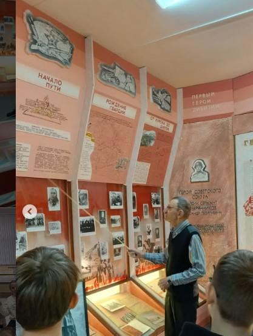
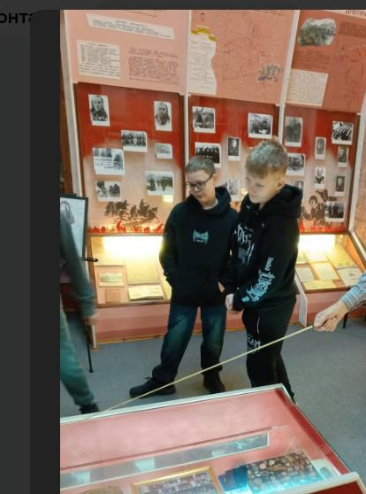

ЭКСКУРСИЯ В МУЗЕЙ БОЕВОЙ СЛАВЫ 6-Й РОВЕНСКОЙ ДИВИЗИИ
Осенние каникулы для 7«Г» класса стали настоящим путешествием в прошлое. Ребята посетили музей Боевой Славы, расположенный в ГУО «Средней школе №7 г.Борисова». Это было не просто мероприятие, а живой урок мужества, который оставил неизгладимый след в сердцах учеников.
С первых шагов в музей ребята ощутили особую, почти осязаемую атмосферу истории. Стены, украшенные картами сражений, старинными фотографиями и пожелтевшими газетами, словно оживали, рассказывая свои истории. Но самое сильное впечатление произвели подлинные экспонаты: солдатские каски с отметинами от осколков, фронтовые письма-треугольники, выцветшие от времени, и личные вещи бойцов, которые бережно хранятся здесь.

Экскурсовод говорил не о сухих фактах, а о судьбах. Он рассказывал о молодых парнях и девушках, которые когда-то учились в таких же школах, как наша, а затем ушли на фронт защищать Родину. Рассматривая их фотографии, было невозможно не задуматься о том, какой ценой им досталась победа. Ученики узнали о героизме земляков, переживших оккупацию и радость освобождения.
Эта экскурсия стала для ребят настоящим откровением. Они представили, как по улицам, где они сейчас гуляют, когда-то грохотали танки, а над головой кружили самолеты. Держа в руках гильзы от патронов, школьники осознали, что это не просто музейные экспонаты, а частицы реальной, кровью написанной истории.

Покидая музей, каждый из учеников чувствовал гордость. Гордость за свой город, за его героев, за их невероятную силу духа и самоотверженность. Эта экскурсия стала напоминанием о том, какой ценой была завоевана мирная жизнь, и как важно хранить эту память.